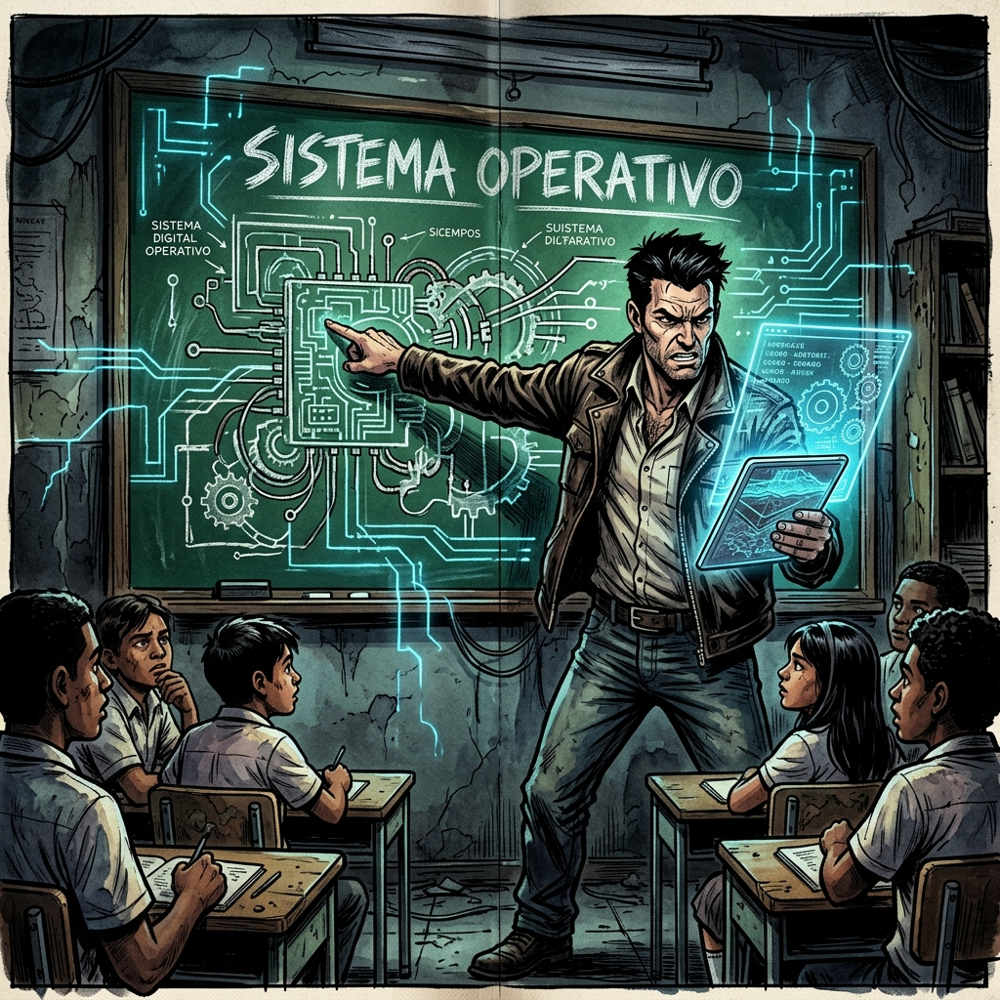
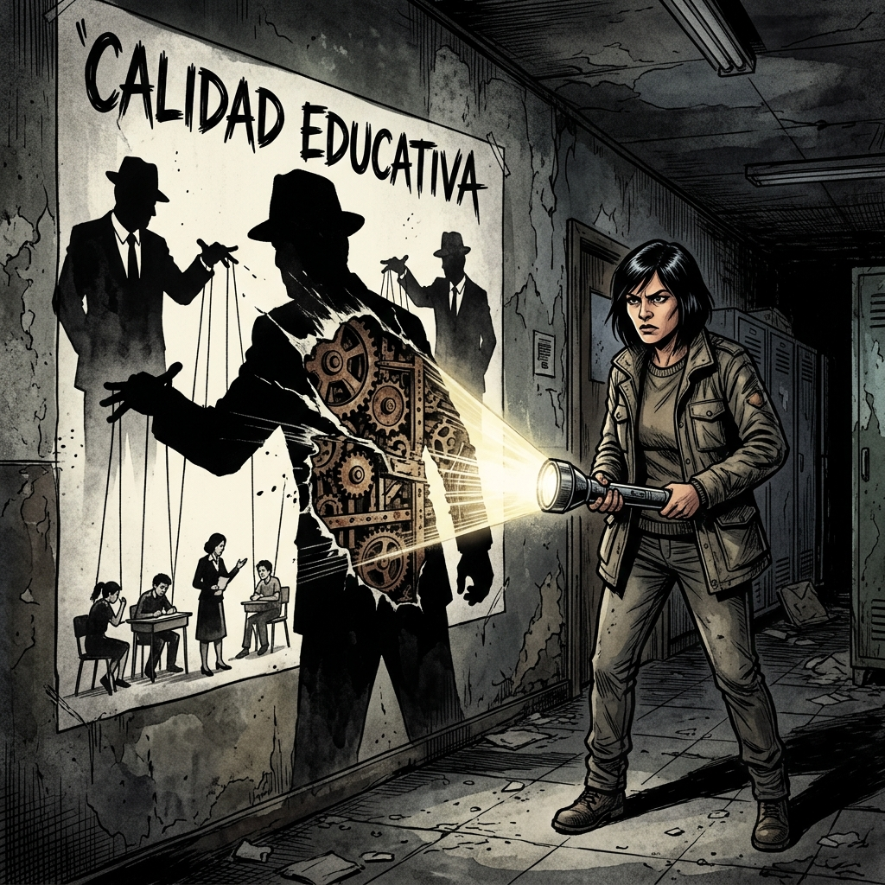
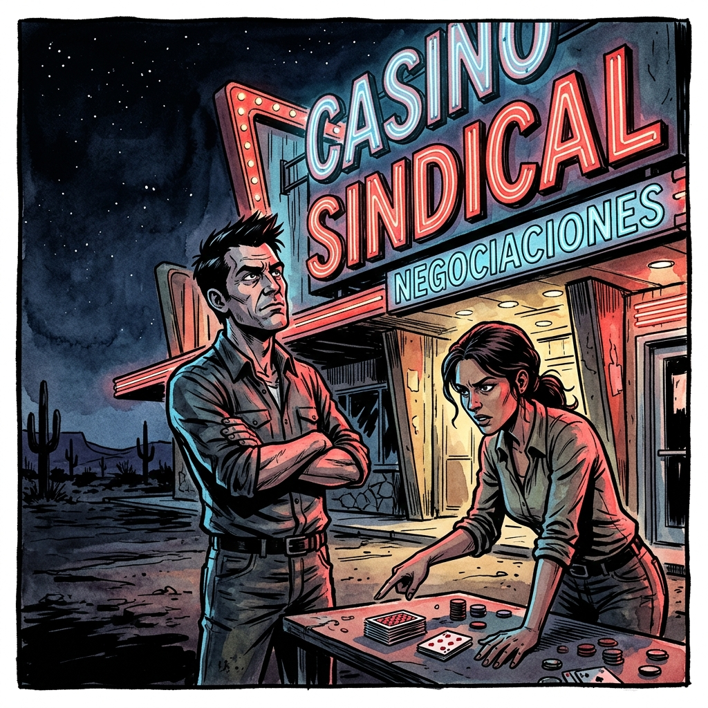
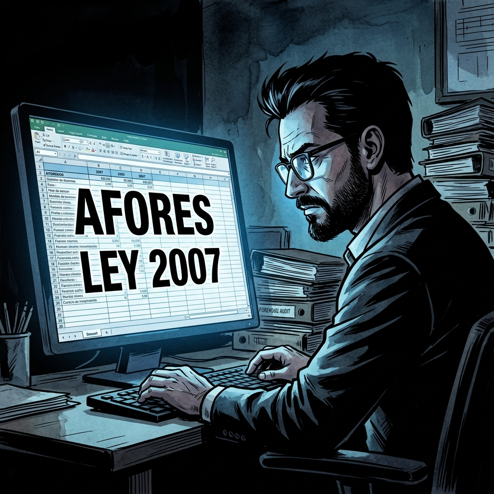
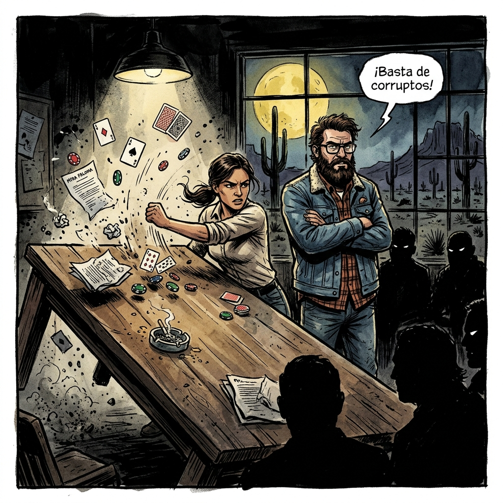
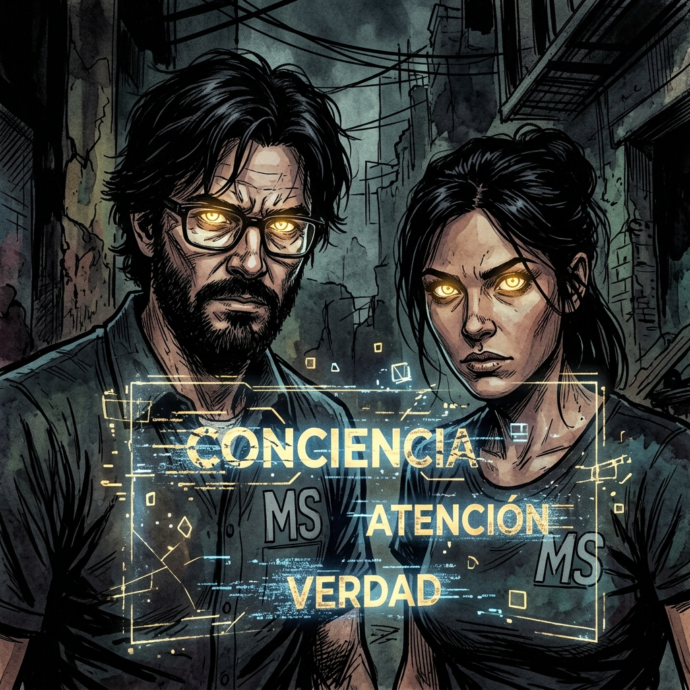
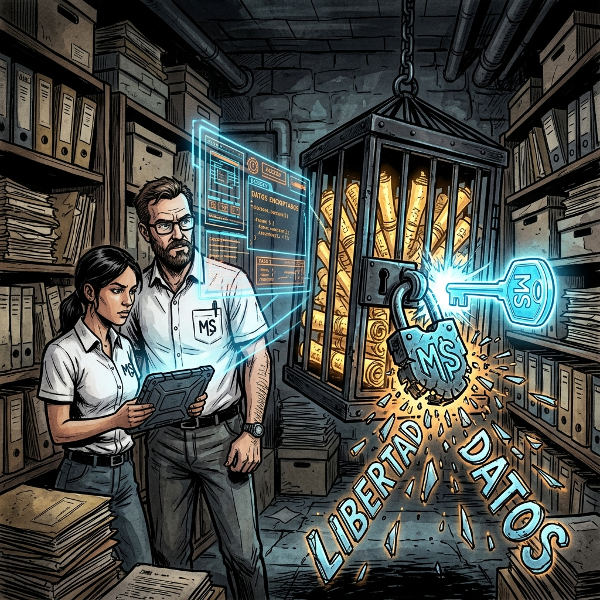
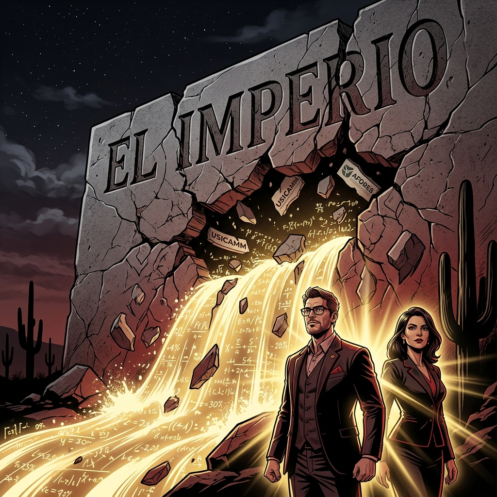
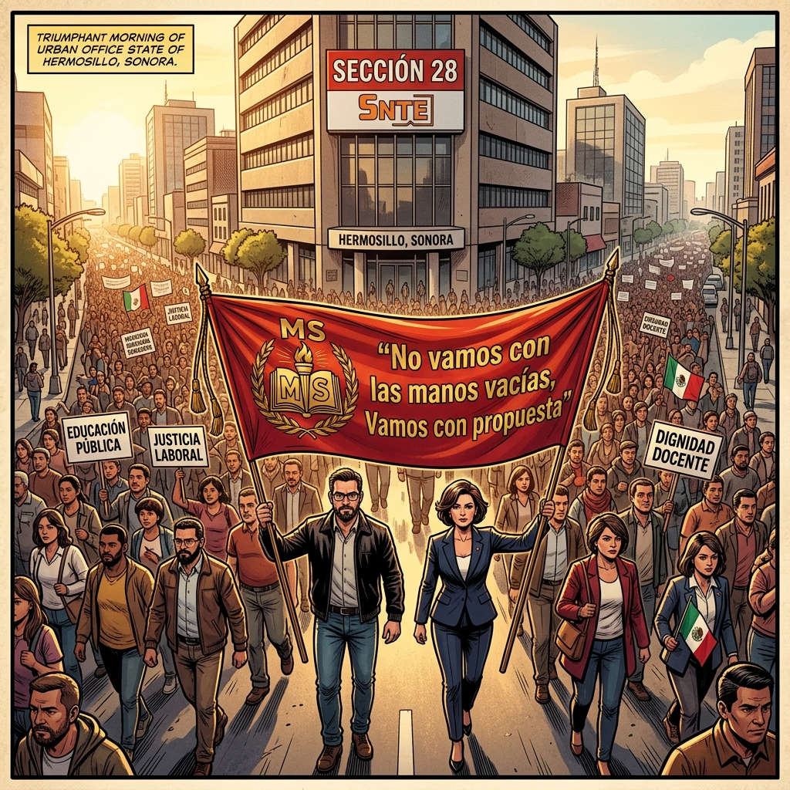

El Fin de la Falsa Narrativa
"No peleen por las fichas de su casino. Peleen por la conciencia de nuestra gente."
Iniciamos el viaje final hacia la soberanía total. En este Tomo XII, hackeamos el código fuente del imperio que ha mantenido al magisterio en las sombras. No es solo una lucha por pensiones, es la batalla definitiva por la conciencia humana y la dignidad del docente sonorense ante el colapso del viejo sistema neoliberal. El Arsenal de la Verdad revela su fase más crítica: la convergencia de la técnica y el alma magisterial.

La Arquitectura de la Sumisión
"La escuela no nos enseña a pensar, nos enseña a ser el sistema operativo del Estado."
El imperio ha diseñado las instituciones educativas no para liberar, sino para adoctrinar. Analizamos cómo el gobierno y la cúpula sindical han construido un "sistema operativo" social donde el docente es un engrane programado para la obediencia. Hackear este código es el primer paso para la verdadera autonomía magisterial y el despertar de la base en Sonora.

La Alegoría de la "Calidad"
"Vemos sombras en la pared y creemos que es la realidad; la 'calidad educativa' es el proyector de las cúpulas."
La narrativa oficial de la calidad educativa y USICAMM funciona como las sombras en la caverna de Platón. Nos mantienen distraídos con burocracia y evaluaciones punitivas mientras saquean el fondo de pensiones. Es hora de girar la cabeza y enfrentar el fuego que proyecta estas mentiras desde las cúpulas. Mtra. Paloma nos muestra que la verdadera luz viene de la conciencia crítica, no de los manuales del imperio.

El Juego de la Traición Sindical
"Si te invitan a jugar su juego, el casino ya decidió que vas a perder."
Las mesas de negociación entre el SNTE y la SEP son un casino de neón en el desierto. Te ofrecen bonos migajas mientras el "juego" (la Ley del ISSSTE y las Afores) está matemáticamente configurado para que el casino nunca pierda y el maestro termine "bichi" en su jubilación. Profe Kristian y Mtra. Paloma saben que la única jugada maestra es no aceptar sus reglas y denunciar el fraude ante la base magisterial.

El Algoritmo del Despojo
"Tu vejez fue privatizada en una hoja de Excel que no te mostraron."
Desglosamos técnicamente el desfalco de la Ley 2007. Las Afores no son ahorros garantizados, son capital de riesgo para el sistema financiero a costa del sudor del docente. Este algoritmo de pobreza programada es el corazón de la "Fábrica de Ignorancia" que el MS ha decidido desmantelar. Profe Kristian muestra que solo con auditorías forenses y el dato duro podemos romper las cadenas de este despojo histórico.

La Estrategia del "No Jugar"
"La única jugada ganadora frente a un tramposo es voltear la mesa."
Basados en la Teoría de Juegos, entendemos que negociar dentro de sus marcos legales es validar el robo. La estrategia MS es la ruptura: no conformarse, no aceptar la sumisión y crear nuestro propio marco de justicia laboral. Si el casino es injusto, el MS lo quiebra con la fuerza de la base unida. Kristian y Paloma lideran esta acción física y simbólica: no más treguas con quienes han hipotecado el futuro del magisterio.
El Poder de la Sincronización
"Éxito = Masa x Energía x Coordinación; la física de la lucha no miente."
El gobierno tiene la "masa" (dinero y leyes), pero nosotros tenemos la "energía" (indignación) y la "coordinación" técnica. Cuando la base se sincroniza bajo un solo pliego petitorio y una sola voz, el sistema colapsa por su propia inercia. La física social está de nuestro lado. Profe Kristian y Mtra. Paloma, portando con orgullo el logo del MS, guían a la base hacia una sincronización perfecta: el punto donde el poder del pueblo supera la masa del imperio.

La Batalla por la Atención
"El verdadero botín no es el dinero, es tu conciencia y tu tiempo."
En la era digital, la batalla es por tu atención. El sistema quiere que estés cansado, distraído y resignado para que no veas cómo saquean tu patrimonio. Pero el MS reclama la conciencia del maestro sonorense. Tu conciencia es la que crea la realidad; si recuperamos nuestra mente y nuestra atención, recuperamos nuestro futuro. Kristian y Paloma nos enseñan a filtrar el ruido del imperio para encontrar la verdad dorada de la lucha magisterial.

Autonomía de la Información
"Quien posee el dato forense, posee la llave de la celda sindical."
El Arsenal de la Verdad es nuestro hackeo definitivo. Al generar nuestra propia información técnica y forense, dejamos de ser dependientes de las mentiras de la cúpula. El MS se convierte en el auditor real del sistema, obligando a la autoridad a enfrentar la realidad de los números que ya no pueden ocultar. Profe Kristian y Mtra. Paloma rompen los candados de la opacidad, devolviendo al magisterio la llave de su propia libertad y patrimonio.

La Convergencia Escatológica
"El fin de un mundo injusto es el inicio de la justicia magisterial."
Estamos llegando al límite de la sostenibilidad social y económica. Las narrativas de la autoridad se agotan mientras el despertar de las bases crece exponencialmente. Esta es la "Convergencia Escatológica": el colapso inevitable del modelo de control y el inicio de una nueva era de soberanía para el educador sonorense. El sistema ya no tiene hacia dónde hacerse; los números no mienten y la base ya no tiene miedo.

Victoria de la Voluntad
"¡PRESENTE! El desierto ha florecido con la dignidad de quien ya no tiene miedo."
La batalla definitiva por la conciencia ha sido ganada. El maestro sonorense ya no es un prisionero del "sistema operativo" del imperio, sino el arquitecto de su propia dignidad. El 1 de Mayo marchamos no como súbditos pidiendo favores, sino como dueños de nuestra historia y protectores de nuestro patrimonio. La Rebelión del Desierto ha fundado el nuevo Sonora magisterial. ¡Fierro por la 300!
CERRAR BIBLIOTECA MS